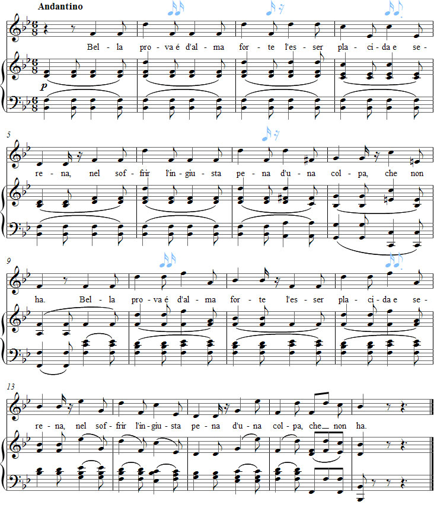

Vaccaj – Exercise 3
Listen to the recording
Sheet music

Exercise 3
Intervalli di sesta
Sixth intervals
to be calm and peaceful
when suffering an unjust pain
guiltless.
Performance instructions
The third exercise contains no fewer than 25 intervals of a sixth in 17 bars. The many large leaps, combined with the 6/8 time signature, make legato challenging and this song one of the most demanding exercises in the entire singing method. In addition, the melody contains a total of 18 notes above C5, which can make the song sound somewhat "nagging". In other words, it has a high tessitura.
Vaccaj sets the eight-syllable poem with a strongly emphasised poetic metre, although Metastasio uses a more varied pattern of stresses. It is therefore unclear why this particular poem was chosen for an exercise on sixths. One possible reason may be the modern idea adopted by Vaccaj that high notes are easier to sing forte.
Like Semplicetta tortorella and Lascia il lido, this exercise begins in the middle of a bar, so the phrases must begin with a sense of an upbeat. This is an excellent reminder that the first note of every phrase should not automatically be strong simply because the lungs are full of air.
Practice suggestions
Begin by working with the text, singing it parlando on one or more comfortable notes at a suitable pitch.
You can first practise the melody using suitable syllables. For example, try the syllable la on notes above C5, and le or lo on the other notes. (The reason for using la on the high notes is not to achieve the greatest possible volume, but because the vowel a helps the student find a sense of depth in the voice.)
A sixteenth-note rest can be written into bar 3 of the vocal part, as in bar 11. In bar 7, it will probably be necessary to make room for a breath after the word pena, without changing the rest in bar 8. (The latter is probably intended to emphasise that the eight-syllable poetic line has a caesura, or a short breathing pause, in the middle of the line.)
The interval of a sixth can be filled in with fourths, fifths or notes from the scale, but this actually makes the song even more complicated. It is better to concentrate on legato as much as possible. Lengthening the vowels on quarter notes and singing the eighth notes leading to the sixth slightly longer than their written values can help with this.
Sing the a vowels as long as possible when two vowels meet in -da e in bars 4 and 12.
Ideas for interpretation
The subject of the poem is serious, so it is important to choose a tempo that reflects this and not to sing too quickly. Otherwise, the song may sound unnecessarily light-hearted.
Since the division into phrases can be somewhat unclear, it is useful here, too, to direct the musical line towards the final stressed syllable of each poetic line. Likewise, care must be taken not to sing the first syllable after a breath too strongly.
Considering the meaning of the text, the first two lines of the poem can appropriately be interpreted in a more positive manner than the final two lines.
The composition does not become truly enjoyable until it is sung with stylish portamento.
Try a long appoggiatura on the words serena (bar 5), colpa (bar 8), forte (bar 11), serena (bar 13) and pena (bar 15).
Forshufvud, G. 1994. Con lieve fiato. Lärarhandledning till Nicola Vaccajs Metodo pratico. Göteborgs universitetet.